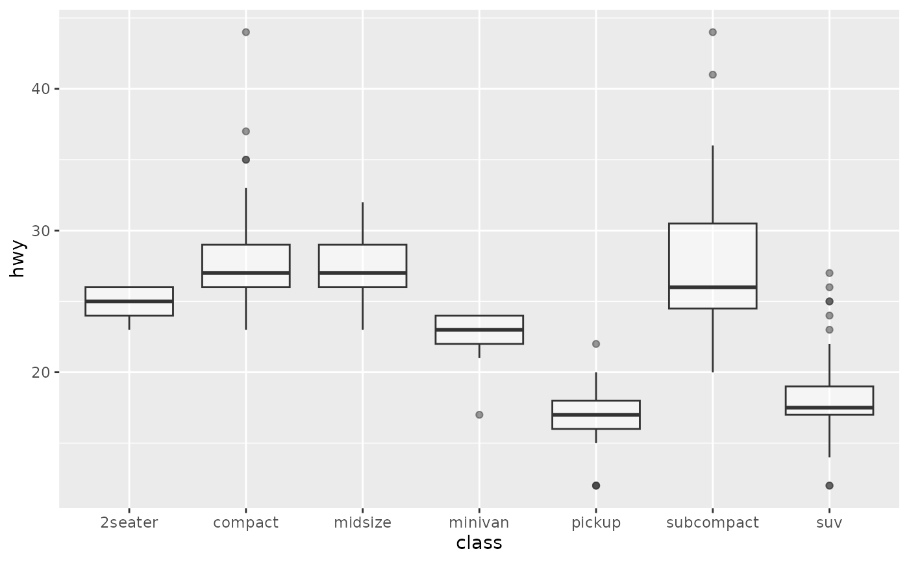
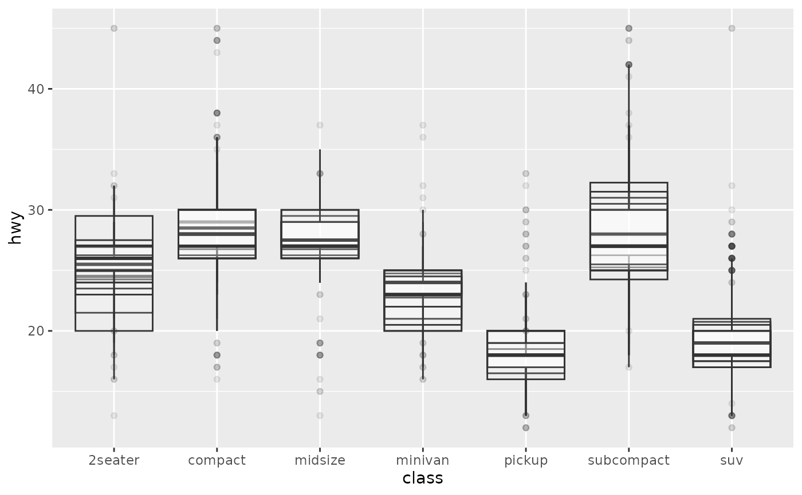
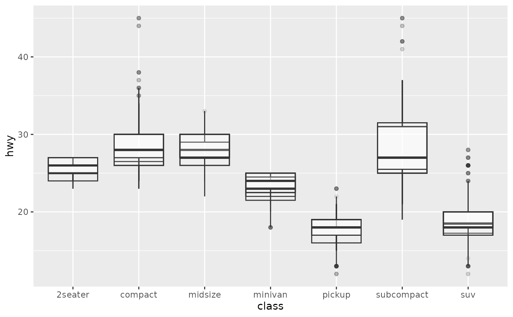
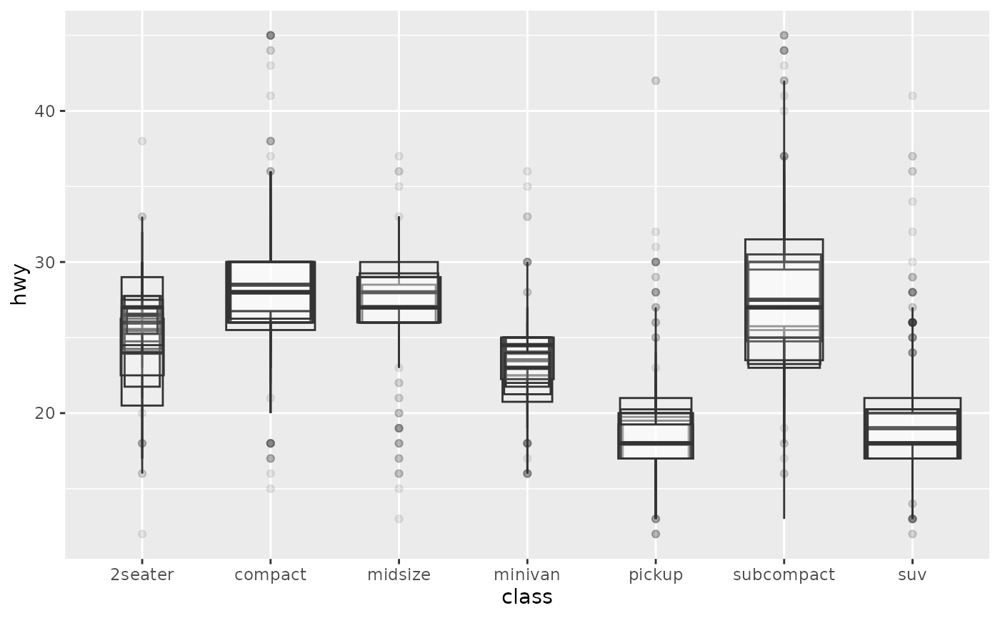
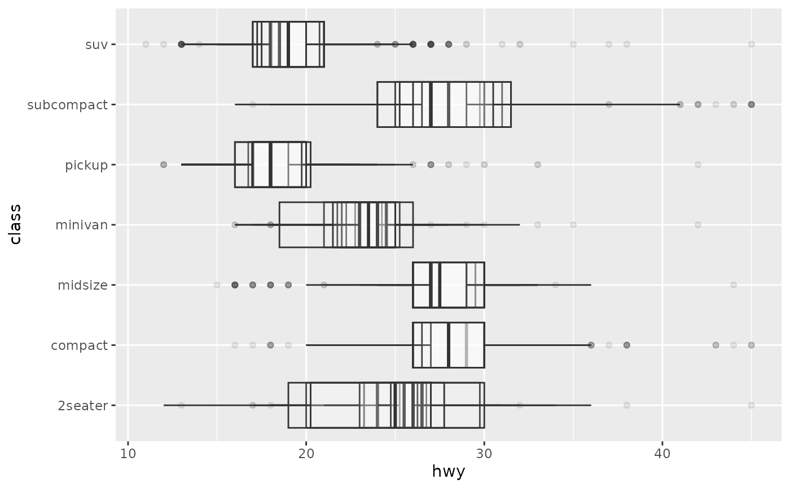
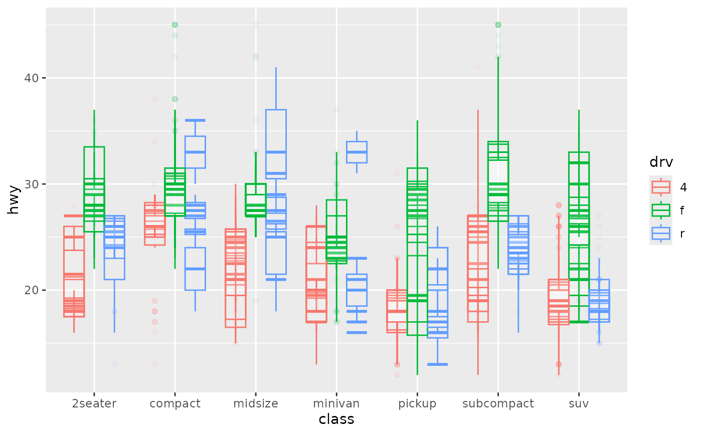

An uncertain box and whiskers plot (in the style of Tukey)
Source:R/geom-boxplot-sample.R, R/stat-boxplot-sample.R
geom_boxplot_sample.RdIdentical to geom_boxplot, except that it will accept a distribution in place of any of the usual aesthetics.
Usage
geom_boxplot_sample(
mapping = NULL,
data = NULL,
times = 10,
seed = NULL,
stat = "boxplot_sample",
position = "identity",
...,
outliers = TRUE,
outlier.colour = NULL,
outlier.color = NULL,
outlier.fill = NULL,
outlier.shape = NULL,
outlier.size = NULL,
outlier.stroke = 0.5,
outlier.alpha = NULL,
whisker.colour = NULL,
whisker.color = NULL,
whisker.linetype = NULL,
whisker.linewidth = NULL,
staple.colour = NULL,
staple.color = NULL,
staple.linetype = NULL,
staple.linewidth = NULL,
median.colour = NULL,
median.color = NULL,
median.linetype = NULL,
median.linewidth = NULL,
box.colour = NULL,
box.color = NULL,
box.linetype = NULL,
box.linewidth = NULL,
notch = FALSE,
notchwidth = 0.5,
staplewidth = 0,
varwidth = FALSE,
na.rm = FALSE,
orientation = NA,
show.legend = NA,
inherit.aes = TRUE
)
stat_boxplot_sample(
mapping = NULL,
data = NULL,
geom = "boxplot",
position = "identity",
...,
times = 10,
orientation = NA,
seed = NULL,
coef = 1.5,
na.rm = FALSE,
show.legend = NA,
inherit.aes = TRUE
)Arguments
- mapping
Set of aesthetic mappings created by
aes(). If specified andinherit.aes = TRUE(the default), it is combined with the default mapping at the top level of the plot. You must supplymappingif there is no plot mapping.- data
The data to be displayed in this layer. There are three options:
If
NULL, the default, the data is inherited from the plot data as specified in the call toggplot().A
data.frame, or other object, will override the plot data. All objects will be fortified to produce a data frame. Seefortify()for which variables will be created.A
functionwill be called with a single argument, the plot data. The return value must be adata.frame, and will be used as the layer data. Afunctioncan be created from aformula(e.g.~ head(.x, 10)).- times
A parameter used to control the number of values sampled from each distribution.
- seed
Set the seed for the layers random draw, allows you to plot the same draw across multiple layers.
- position
A position adjustment to use on the data for this layer. This can be used in various ways, including to prevent overplotting and improving the display. The
positionargument accepts the following:The result of calling a position function, such as
position_jitter(). This method allows for passing extra arguments to the position.A string naming the position adjustment. To give the position as a string, strip the function name of the
position_prefix. For example, to useposition_jitter(), give the position as"jitter".For more information and other ways to specify the position, see the layer position documentation.
- ...
Other arguments passed on to
layer()'sparamsargument. These arguments broadly fall into one of 4 categories below. Notably, further arguments to thepositionargument, or aesthetics that are required can not be passed through.... Unknown arguments that are not part of the 4 categories below are ignored.Static aesthetics that are not mapped to a scale, but are at a fixed value and apply to the layer as a whole. For example,
colour = "red"orlinewidth = 3. The geom's documentation has an Aesthetics section that lists the available options. The 'required' aesthetics cannot be passed on to theparams. Please note that while passing unmapped aesthetics as vectors is technically possible, the order and required length is not guaranteed to be parallel to the input data.When constructing a layer using a
stat_*()function, the...argument can be used to pass on parameters to thegeompart of the layer. An example of this isstat_density(geom = "area", outline.type = "both"). The geom's documentation lists which parameters it can accept.Inversely, when constructing a layer using a
geom_*()function, the...argument can be used to pass on parameters to thestatpart of the layer. An example of this isgeom_area(stat = "density", adjust = 0.5). The stat's documentation lists which parameters it can accept.The
key_glyphargument oflayer()may also be passed on through.... This can be one of the functions described as key glyphs, to change the display of the layer in the legend.
- outliers
Whether to display (
TRUE) or discard (FALSE) outliers from the plot. Hiding or discarding outliers can be useful when, for example, raw data points need to be displayed on top of the boxplot. By discarding outliers, the axis limits will adapt to the box and whiskers only, not the full data range. If outliers need to be hidden and the axes needs to show the full data range, please useoutlier.shape = NAinstead.- outlier.colour, outlier.color, outlier.fill, outlier.shape, outlier.size, outlier.stroke, outlier.alpha
Default aesthetics for outliers. Set to
NULLto inherit from the data's aesthetics.- whisker.colour, whisker.color, whisker.linetype, whisker.linewidth
Default aesthetics for the whiskers. Set to
NULLto inherit from the data's aesthetics.- staple.colour, staple.color, staple.linetype, staple.linewidth
Default aesthetics for the staples. Set to
NULLto inherit from the data's aesthetics. Note that staples don't appear unless thestaplewidthargument is set to a non-zero size.- median.colour, median.color, median.linetype, median.linewidth
Default aesthetics for the median line. Set to
NULLto inherit from the data's aesthetics.- box.colour, box.color, box.linetype, box.linewidth
Default aesthetics for the boxes. Set to
NULLto inherit from the data's aesthetics.- notch
If
FALSE(default) make a standard box plot. IfTRUE, make a notched box plot. Notches are used to compare groups; if the notches of two boxes do not overlap, this suggests that the medians are significantly different.- notchwidth
For a notched box plot, width of the notch relative to the body (defaults to
notchwidth = 0.5).- staplewidth
The relative width of staples to the width of the box. Staples mark the ends of the whiskers with a line.
- varwidth
If
FALSE(default) make a standard box plot. IfTRUE, boxes are drawn with widths proportional to the square-roots of the number of observations in the groups (possibly weighted, using theweightaesthetic).- na.rm
If
FALSE, the default, missing values are removed with a warning. IfTRUE, missing values are silently removed.- orientation
The orientation of the layer. The default (
NA) automatically determines the orientation from the aesthetic mapping. In the rare event that this fails it can be given explicitly by settingorientationto either"x"or"y". See the Orientation section for more detail.- show.legend
logical. Should this layer be included in the legends?
NA, the default, includes if any aesthetics are mapped.FALSEnever includes, andTRUEalways includes. It can also be a named logical vector to finely select the aesthetics to display. To include legend keys for all levels, even when no data exists, useTRUE. IfNA, all levels are shown in legend, but unobserved levels are omitted.- inherit.aes
If
FALSE, overrides the default aesthetics, rather than combining with them. This is most useful for helper functions that define both data and aesthetics and shouldn't inherit behaviour from the default plot specification, e.g.annotation_borders().- geom, stat
Use to override the default connection between
geom_boxplot()andstat_boxplot(). For more information about overriding these connections, see how the stat and geom arguments work.- coef
Length of the whiskers as multiple of IQR. Defaults to 1.5.
Examples
library(ggplot2)
# ggplot
p <- ggplot(mpg, aes(class, hwy))
p + geom_boxplot(alpha=0.5)

# using alpha to manage overplotting
q <- ggplot(uncertain_mpg, aes(class, hwy))
q + geom_boxplot_sample(alpha=0.1)

# ggplot
p + geom_boxplot(varwidth = TRUE)

# ggdibbler
q + geom_boxplot_sample(alpha=0.1, varwidth = TRUE)

# ggplot
p + geom_boxplot(aes(colour = drv), position = position_dodge(preserve = "single"))

# ggdibbler
q + geom_boxplot_sample(aes(colour = drv), alpha=0.05, position = "dodge_identity")
